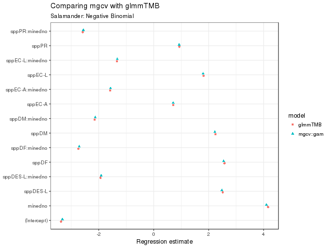
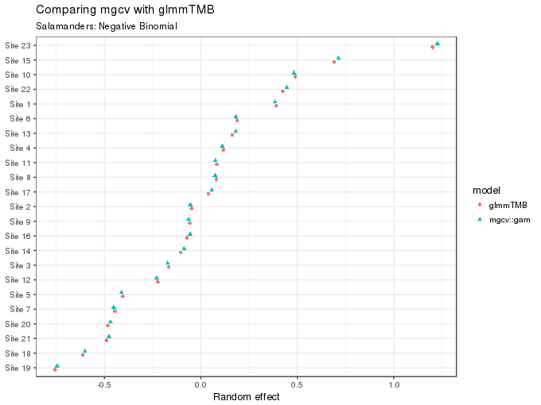
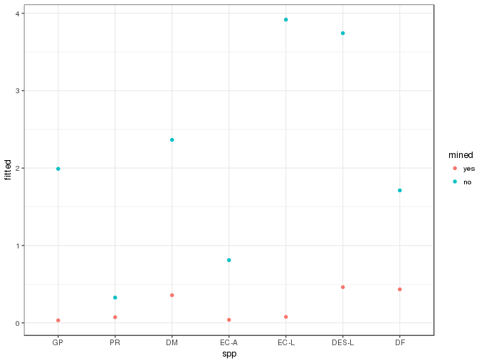
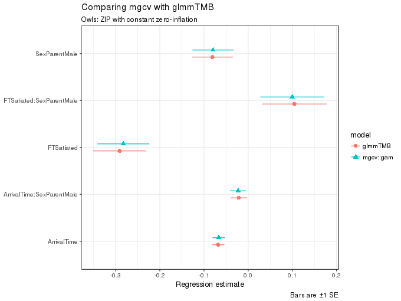
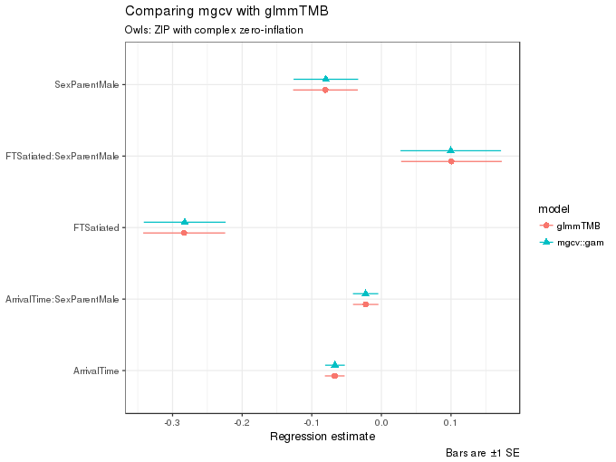

Fitting count and zero-inflated count GLMMs with mgcv
Posted in
Tagged
GLMM mgcv glmmTMB GAM splines random effects counts negative binomial zero inflation
A couple of days ago, Mollie Brooks and coauthors posted a preprint on BioRχiv illustrating the use of the glmmTMB R package for fitting zero-inflated GLMMs (Brooks et al., 2017). In the paper, glmmTMB is compared with several other GLMM-fitting packages. mgcv has recently gained the ability to fit a wider range of families beyond the exponential family of distributions, including zero-inflated Poisson models. mgcv can also fit simple GLMMs through a spline equivalent of a Gaussian random effect. So, whilst I was waiting on some Bayesian GAMs to finish sampling, I decided to see how mgcv compared against glmmTMB on the two examples used in the paper.
For this post I’ll be using a couple of packages beyond glmmTMB and mgcv; make sure you have ggplot2 and ggstance installed if you wish to run through the code below.
library("glmmTMB")
library("mgcv")
library("ggplot2")
theme_set(theme_bw())
library("ggstance")There are several ways in which mgcv allows GLMMs to be fitted, but the way that interests me here is via gam() and the random effect spline basis. Penalised splines of the type provided in mgcv can also be represented in mixed model form, such that GAMs can also be fitted using mixed effect modelling software. The general idea is that the spline is decomposed into two parts:
- the perfectly smooth parts of the basis, namely those functions, including constant and linear functions, in the penalty null space of the spline. These are added to the fixed effects model matrix, whilst,
- the remaining wiggly parts of the basis are treated as random effects.
Given this duality between splines and random effects, you can reverse the idea and create a spline basis that is the equivalent of a simple Gaussian i.i.d random effect, such that you can fit a GLMM or GAMM using GAM software like mgcv. mgcv has the re basis for this, and I’ll exploit that to fit the zero-inflated GLMMs to the two examples.
In Brooks et al. (2017), two example data sets are used;
Salamanders— Seven combinations of different salamander species and life-stages were repeatedly sampled four times at 23 sites in Applachian streams (Price et al., 2016). Some of the streams were impacted by mountaintop removal and valley filling from coal mining. The data are available from Price et al. (2015), as well as the glmmTMB package.Owls— the second example is a well-studied one in mixed modelling papers and textbooks Bolker et al. (2013), and relates to the begging behaviour of owl nestlings. The data were originally reported in Roulin and Bersier (2007).
Salamanders
Brooks et al. (2017) fit several count models to the Salamander data set, including standard Poisson GLMMs, negative binomial GLMMs, with \(\theta\) estimated and modelled via a linear predictor, as well as zero-inflated Poisson (ZIP) and zero-inflated negative binomial (ZINB) models. Of these, gam() can currently fit all but the negative binomial with \(\theta\) modelled via a linear predictor and the ZINB models.
The best fitting model of those presented was a negative binomial model, whilst Brooks et al. (2017) also illustrate how to generate fitted values from the ZIP. Rather than go through fitting all of the Brooks et al. (2017) models, I restrict fitting here to these two models. A gist with code to fit all the models that gam() is capable of is available on Github. I have named the models similarly to Brooks et al. (2017) to facilitate comparison.
nbgam2 <- gam(count ~ spp * mined + s(site, bs = "re"), data = Salamanders,
family = nb, method = "ML")
nbm2 <- glmmTMB(count ~ spp * mined + (1 | site), data = Salamanders,
family = nbinom2)As glmmTMB() is currently only capable of fitting models using maximum likelihood, not REML, I use the Laplace approximate maximum likelihood estimation method for gam(). The new nb family in mgcv is for the negative binomial distribution with the (fixed) dispersion parameter \(\theta\) estimated as a model parameter, in the same way that MASS::glm.nb() and lme4::glmer.nb() models do.
In the gam() model, the random effect is specified using the standard s() smooth function with the "re" basis selected. The named variable, here site, should be stored as a factor in the data object to avoid problems.
The figure below compares the coefficient estimates returned by glmmTMB() and gam(); they are very similar, which is encouraging.
nb2.coefs <- data.frame(estimate = c(coef(summary(nbm2))$cond[, "Estimate"], coef(nbgam2)[c(1:14)]),
model = rep(c("glmmTMB", "mgcv::gam"), each = 14),
term = rep(names(coef(nbgam2)[c(1:14)]), 2))
ggplot(nb2.coefs, aes(x = estimate, y = term, colour = model, shape = model)) +
geom_point(position = position_dodgev(height = 0.3)) +
labs(y = NULL,
x = "Regression estimate",
title = "Comparing mgcv with glmmTMB",
subtitle = "Salamander: Negative Binomial")
The values (posterior modes, or means) for the site random effect can also be compared
nbgam2.r <- coef(nbgam2)[-c(1:14)]
nbm2.r <- ranef(nbm2)$cond$site[,1]
nms <- sub("s\\(site\\)\\.", "Site ", names(nbgam2.r))
ranefs <- data.frame(ranef = c(unname(nbgam2.r), nbm2.r),
model = rep(c("glmmTMB", "mgcv::gam"), each = length(nbgam2.r)),
site = rep(nms, 2))
ranefs <- transform(ranefs, site = factor(site, nms[order(nbgam2.r)]))
ggplot(ranefs, aes(x = ranef, y = site, colour = model, shape = model)) +
geom_point(position = position_dodgev(height = 0.5)) +
labs(y = NULL,
x = "Random effect",
title = "Comparing mgcv with glmmTMB",
subtitle = "Salamanders: Negative Binomial")
As the figure above shows, these too are essentially equivalent for the two fits.
The summary() output for the glmmTMB() model conveniently provides some additional useful information, in the context of GLMMs most notably the estimated variances (or standard deviations) of the random effect terms. As gam() wasn’t designed with GLMMs specifically in mind, the same information is not provided in the the summary() method for gam() model fits. However, Simon Wood has provided the gam.vcomp() function, which can be used to return the variance components of the model in a way that allows comparison with other mixed-models specific software.
summary(nbm2)
Family: nbinom2 ( log )
Formula: count ~ spp * mined + (1 | site)
Data: Salamanders
AIC BIC logLik deviance df.resid
1663.4 1734.8 -815.7 1631.4 628
Random effects:
Conditional model:
Groups Name Variance Std.Dev.
site (Intercept) 0.2842 0.5331
Number of obs: 644, groups: site, 23
Overdispersion parameter for nbinom2 family (): 1
Conditional model:
Estimate Std. Error z value Pr(>|z|)
(Intercept) -3.3750 0.7576 -4.455 8.40e-06 ***
sppPR 0.9306 0.8773 1.061 0.288829
sppDM 2.2485 0.7878 2.854 0.004314 **
sppEC-A 0.7143 0.9052 0.789 0.430029
sppEC-L 1.8130 0.8130 2.230 0.025741 *
sppDES-L 2.5111 0.7795 3.221 0.001275 **
sppDF 2.5765 0.7801 3.303 0.000957 ***
minedno 4.1619 0.7932 5.247 1.55e-07 ***
sppPR:minedno -2.5831 0.9328 -2.769 0.005617 **
sppDM:minedno -2.1495 0.8258 -2.603 0.009245 **
sppEC-A:minedno -1.5828 0.9461 -1.673 0.094339 .
sppEC-L:minedno -1.3383 0.8493 -1.576 0.115100
sppDES-L:minedno -1.9358 0.8164 -2.371 0.017729 *
sppDF:minedno -2.7426 0.8217 -3.338 0.000844 ***
---
Signif. codes: 0 '***' 0.001 '**' 0.01 '*' 0.05 '.' 0.1 ' ' 1
Now the gam() version, conveniently with a confidence interval
gam.vcomp(nbgam2)
Standard deviations and 0.95 confidence intervals:
std.dev lower upper
s(site) 0.5325309 0.327768 0.8652132
Rank: 1/1
One further analysis that Brooks et al. (2017) do with the Salamander data (in their Appendix B) is to demonstrate how to generate and plot fitted values from the model. To do this, the analyst needs to consider whether to and how to marginalise over or condition on the random effects. The Appendix has some details on this more generally (via a linked reference) and more-specific pointers on how to go about doing this with glmmTMB() models. In the next few code chunks I will illustrate how to achieve the result from their section Alternative prediction method, where the aim is to predict at the population mode by setting the random effect component to 0. To illustrate this, Brooks et al. (2017) use the more complex ZIP model with linear predictors for both the mean and the zero-inflation components of the model. I fit those models first
## glmmTMB()
zipm3 <- glmmTMB(count ~ spp * mined + (1 | site), zi = ~ spp * mined,
data = Salamanders, family = poisson)
## gam()
zipgam3 <- gam(list(count ~ spp * mined + s(site, bs = "re"),
~ spp * mined),
data = Salamanders, family = ziplss, method = "REML")The glmmTMB() model has the zero-inflation linear predictor specified via the ziformula argument (abbreviated to zi above). With gam() however, multiple linear predictors are specified via a list of formula objects, only the first of which has a response (left-hand-side). The first formula, with the response, is for the Poisson mean, whilst the second is for the zero-inflation component. Note also that we use the special ziplss() family and that now the model is being estimated using REML, because that is the only option available for these models, which Simon Wood calls general smooth models (Wood et al., 2016). Do note that there is (as of writing) no link argument(s) for the ziplss() family. This is due to the way the model is parameterised internally in the software. This will require us to pay particular attention to the implementation shortly.
To recreate part of Figure B.3 in Appendix B (Brooks et al., 2017), the code below predicts from the fitted gam() model for all combinations of the factors mined and spp. Notice how we have to specify a site in the prediction data, otherwise predict() will throw a tantrum. To set the random effect for site to zero, use the exclude argument. To exclude (i.e. set to zero) any model term, you supply a character vector or list of terms to exclude. For smooth terms, these must be named as they appear in summary(model), hence the use of "s(site)". The final step is to call predict() with type = "link". This will return a two column matrix (or a list of two-column matrices if se.fit = TRUE is also used).
## Newdata
newd0 <- newd <- as.data.frame(cbind(unique(Salamanders[, c("mined","spp")]), site = "R -1"))
rownames(newd0) <- rownames(newd) <- NULL
pred <- predict(zipgam3, newd, exclude = "s(site)", type = "link")
head(pred)
[,1] [,2]
1 0.36061171 -3.7727169
2 0.94857203 0.3875087
3 0.07601834 -2.6504763
4 0.35637762 -1.3459854
5 0.55867674 -1.4747253
6 1.14836206 0.3266343
The first column is the predicted value of the response from the Poisson part of the model on the scale of the linear predictor (the log scale). The second column is the predicted value from the zero-inflation component and is on the complementary log-log scale. Both of these need to be back transformed to the respective response scales and then multiplied together. To do this for the zero-inflation part, I copied the code from the base R binomial() family with the appropriate link specified. The second line of code below adds the predicted values for each combination of mined and spp to the prediction data object. Note that each component is back-transformed using the appropriate link, and then multiplied together.
ilink <- binomial(link = "cloglog")$linkinv
newd <- transform(newd, fitted = exp(pred[,1]) * ilink(pred[,2]))A plot of the predicted values is then easily produced
ggplot(newd, aes(x = spp, y = fitted, colour = mined)) +
geom_point()
Because of the way the gam() model is implemented, I could also have computed the Bayesian credible intervals using the Bayesian covariance matrix of the model parameters via the se.fit argument to predict(). I’ll perhaps save that for another day…
Owls
The Owls data are also available in the glmmTMB package, which I load and then do a little processing of the data to simplify the name of the response variable and to mean centre the ArrivalTime covariate.
data(Owls, package = "glmmTMB")
names(Owls) <- sub("SiblingNegotiation", "NCalls", names(Owls))
Owls <- transform(Owls, cArrivalTime = ArrivalTime - mean(ArrivalTime))Two ZIP models are considered
- a ZIP with constant zero-inflation (an intercept-only model for the zero-inflation), and
- a ZIP with complex zero-inflation, where one covariate and a random effect for
Nestare included in the linear predictor of the zero-inflation part of the model.
The constant zero-inflation models are fitted using the ziformula argument for glmmTMB with family = poisson, whilst for gam() we use a list of two formula objects, the second for the ZI linear predictor, and the ziplss family. Note that this model could also be fitted using the Zip() family in mgcv but that employs a different, simpler fitting algorithm so to facilitate comparison with the more complex model I use ziplss() instead.
m1.tmb <- glmmTMB(NCalls ~ (FoodTreatment + cArrivalTime) * SexParent + offset(logBroodSize) + (1 | Nest),
ziformula = ~ 1, data = Owls, family = poisson)
m1.gam <- gam(list(NCalls ~ (FoodTreatment + cArrivalTime) * SexParent + offset(logBroodSize) + s(Nest, bs = "re"),
~ 1),
data = Owls, family = ziplss())Again note that these models are not estimated in the same way; glmmTMB() estimates the model parameters using maximum likelihood, whilst only REML estimation is available for the ziplss() family with gam(). In gam(), the intercept-only ZI linear predictor is specified with the formula ~ 1.
To compare the estimates of the model coefficients I wrote a little function to extract the estimated values and their standard errors from the two model objects
createCoeftab <- function(TMB, GAM, GAMrange) {
bTMB <- fixef(TMB)$cond[-1]
bGAM <- coef(GAM)[GAMrange]
seTMB <- diag(vcov(TMB)$cond)[-1]
seGAM <- diag(vcov(GAM))[GAMrange]
nms <- names(bTMB)
nms <- sub("FoodTreatment", "FT", nms)
nms <- sub("cArrivalTime", "ArrivalTime", nms)
df <- data.frame(model = rep(c("glmmTMB", "mgcv::gam"), each = length(bGAM)),
term = rep(nms, 2),
estimate = unname(c(bTMB, bGAM)))
df <- transform(df,
upper = estimate + sqrt(c(seTMB, seGAM)),
lower = estimate - sqrt(c(seTMB, seGAM)))
df
}Passing each of the models to createCoeftab()
m1.coefs <- createCoeftab(m1.tmb, m1.gam, GAMrange = 2:6)results in a tidy data frame suitable for plotting with ggplot().
ggplot(m1.coefs, aes(x = estimate, y = term, colour = model, shape = model, xmax = upper, xmin = lower)) +
geom_pointrangeh(position = position_dodgev(height = 0.3)) +
labs(y = NULL,
x = "Regression estimate",
title = "Comparing mgcv with glmmTMB",
subtitle = "Owls: ZIP with constant zero-inflation",
caption = "Bars are ±1 SE")
As can be seen in the figure, the estimates from the two functions are quite similar.
The more-complex models with covariates in the ZI linear predictor are fitted next
m2.tmb <- glmmTMB(NCalls ~ (FoodTreatment + cArrivalTime) * SexParent +
offset(logBroodSize) + (1 | Nest),
ziformula = ~ FoodTreatment + (1 | Nest), data = Owls, family = poisson)
m2.gam <- gam(list(NCalls ~ (FoodTreatment + cArrivalTime) * SexParent +
offset(logBroodSize) + s(Nest, bs = "re"),
~ FoodTreatment + s(Nest, bs = "re")),
data = Owls, family = ziplss())As before, we gather the model coefficients
m2.coefs <- createCoeftab(m2.tmb, m2.gam, GAMrange = 2:6)and plot them
ggplot(m2.coefs, aes(x = estimate, y = term, colour = model, shape = model,
xmax = upper, xmin = lower)) +
geom_pointrangeh(position = position_dodgev(height = 0.3)) +
labs(y = NULL,
x = "Regression estimate",
title = "Comparing mgcv with glmmTMB",
subtitle = "Owls: ZIP with complex zero-inflation",
caption = "Bars are ±1 SE")
and likewise as before, the estimates of the fixed effect terms are very similar indeed.
Conclusions
The comparisons shown above show that mgcv::gam() and glmmTMB() produce very similar estimates for the two models. And some crude timings showed that gam() was 20–40% faster than glmmTMB() at fitting the examples discussed in the paper. So all is roses, right!? Who needs glmmTMB()?
That would however, be totally the wrong message to take from this comparison. Most notably, and something that isn’t surfaced in these simple examples is that gam() is limited in the complexity of the random effects it can efficiently represent in models:
- it can’t do correlated random effects for random slopes and intercepts models (as far as I can tell anyway), and, and this is probably the deal breaker,
- model fitting with
gam()gets bogged down quickly if the number of levels in a random effect gets large. Jamie Ashander did some quick tests with a larger version of the Salamander with 100s ofsites andglmmTMB()totally dominatedgam().
And that’s fine; gam() was not designed to fit GLMMs — there are no less than three implementations by Simon Wood alone of functions to fit GAMs with complex random effects in mixed model software (gamm() to fit with lme(), gamm4() to fit using lmer() and glmer(), and jagam() in mgcv to fit via JAGS). Furthermore, glmmTMB() is currently more flexible in the range of models that it can fit than any these implementations, except for JAGS, because the nb, Zip, and ziplss families only work with gam().
What the above comparison illustrates, however, is that if you either don’t have complex or many random effects or that you don’t mind running models overnight, gam() is a good option for fitting GLMMs. Plus you have the advantage of estimating smooth functions of covariates, which is one area where glmmTMB() is currently very lacking compared to gam().
That said, it should be possible to emulate what Paul-Christian Bürkner has done in his brms package (and similar implementations by Simon Wood in gamm4()) to use mgcv to set up the correct model matrices for the random effect representation of splines which can then be fitted using glmmTMB().
Finally, this was a fun exercise to replicate the analyses in Brooks et al. (2017), motivated by a desire to understand what mgcv and gam() are doing with these random effect splines. It wasn’t intended as a prize-fight between two title contenders — hopefully this write-up didn’t come across that way. I also learned a lot more about glmmTMB, which is shaping up nicely and looks like it’ll have a place in my modelling toolbox.